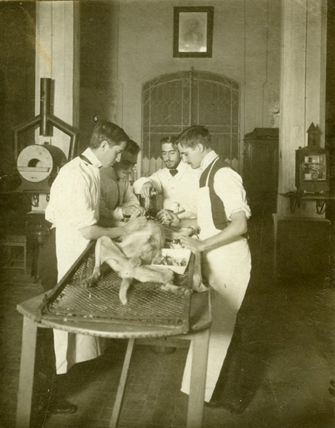
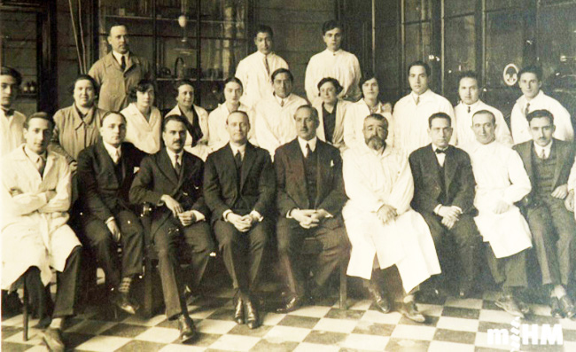
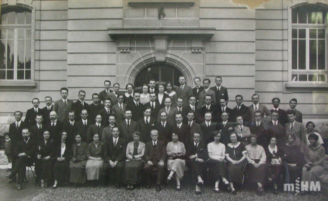
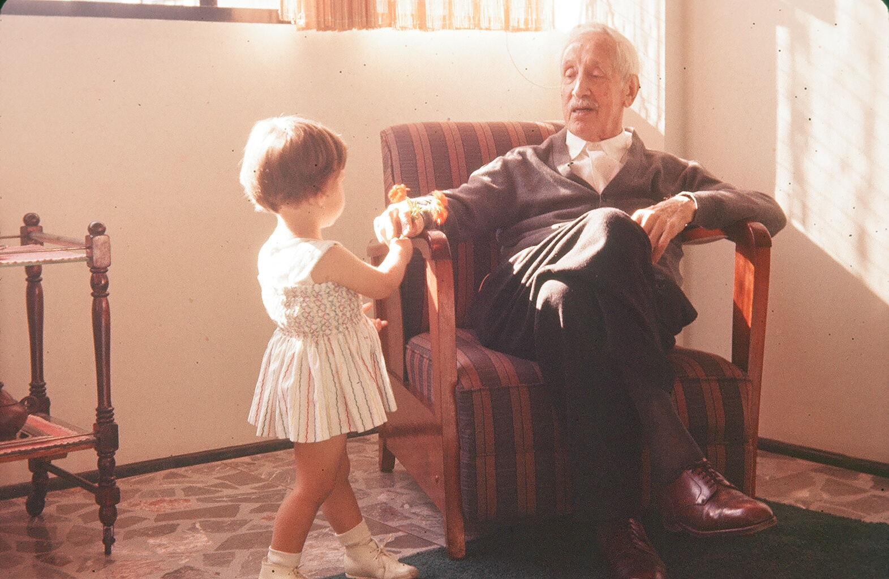

La vida
Biografia
De la Barcelona científica de final del segle XIX a l'exili americà: la trajectòria del fisiòleg que va modernitzar la ciència catalana.
Joventut
August Pi-Sunyer va néixer el 12 d'agost de 1879 a Barcelona, en el si d'una família de metges amb arrels profundes a l'Empordà. El seu pare, Jaume Pi i Sunyer, era un reconegut catedràtic de Patologia General a la Universitat de Barcelona i un dels pioners de la medicina científica al país. La seva mare, Carolina Sunyer i Quintana, originària també de Roses, era filla del polític Francesc Sunyer i Capdevila.
La infància d'August es va desenvolupar en un entorn intel·lectual i científic. Va fer els seus primers passos en la recerca al Laboratori Municipal de Barcelona, on es duien a terme estudis pioners en bacteriologia i fisiologia. La influència del seu pare va ser decisiva, però també ho va ser la de Ramón Turró, col·laborador de Jaume, que esdevingué mentor d'August després de la mort prematura del seu pare l'any 1897, quan ell tenia només 17 anys.
La mort del seu pare va situar la família en una situació econòmica difícil, fet que obligà August a compaginar els estudis amb la feina. Tot i això, la seva passió per la ciència no va decaure. Amb 20 anys, el 1899, es va llicenciar en Medicina a la Universitat de Barcelona i, l'any següent (1900), va defensar la seva tesi doctoral a Madrid sobre «La Vida Anaeròbia», on examinava la relació entre la química i els processos biològics.

Carrera professional
Inici de la carrera acadèmica i professional
L'any 1902, només dos anys després de doctorar-se, August va començar a exercir com a professor auxiliar de Fisiologia a la Universitat de Barcelona. Alhora, va tenir un paper destacat al Laboratori Municipal de Barcelona, sota la direcció de Ramón Turró, on va participar en estudis pioners sobre immunitat i metabolisme.
L'any 1904, August va obtenir la càtedra de Fisiologia a la Universitat de Sevilla. Tot i això, el seu vincle amb Catalunya era profund, i aviat va comprendre que la seva veritable vocació era continuar investigant i ensenyant al seu país. Tot i ocupar breument la càtedra a Sevilla, va aconseguir permisos per seguir les seves recerques a Barcelona, renunciant definitivament a la plaça el 1908.
Fundació de l'Institut de Fisiologia i consolidació a la Universitat de Barcelona
El 1914, August va ser nomenat professor titular a la Universitat de Barcelona. El 1916, amb la jubilació del professor Ramón Coll i Pujol, va obtenir oficialment la càtedra de Fisiologia. Aquest fet marcà un punt d'inflexió en la seva trajectòria, ja que li permeté impulsar projectes de recerca d'envergadura i formar noves generacions de metges i científics. Convençut de la importància de l'experimentació i del treball en equip, fomentà un entorn de recerca interdisciplinària on la fisiologia s'integrava amb la química i la biologia.
El 1920, amb el suport de la Mancomunitat de Catalunya, es va crear l'Institut de Fisiologia, una institució pionera en la recerca biomèdica a Espanya. August Pi-Sunyer en va ser nomenat director i, sota el seu lideratge, l'Institut es convertí en un referent en fisiologia, no només a Catalunya, sinó també a escala europea. Va aconseguir reunir un equip d'investigadors excel·lents i establir vincles internacionals que van reforçar la qualitat i el prestigi de la recerca científica catalana.
Activitat política i compromís amb Catalunya
Paral·lelament a la seva tasca científica, August va mantenir una intensa implicació en la vida política i social de Catalunya. Defensor convençut dels drets nacionals i de l'autonomia, el 1916 s'incorporà a la Unió Federal Nacionalista Republicana, partit que propugnava l'autogovern de Catalunya dins d'una república espanyola. Aquest compromís el portà a ser elegit diputat per Figueres (1916-1923), des d'on defensà l'autonomia universitària i la necessitat de modernitzar l'educació i la recerca.
A més, va ser un dels impulsors de l'Estatut de la Universitat Autònoma de Barcelona, defensant la independència acadèmica davant les autoritats governamentals. Considerava que la universitat havia de ser un espai lliure d'interferències polítiques, on la ciència i el coneixement poguessin desenvolupar-se sense restriccions. La seva visió per promoure l'ús del català com a llengua científica el portà a fundar la Societat Catalana de Biologia (1912) i a dirigir la revista «Treballs de la Societat de Biologia», deixant un llegat que transcendeix l'àmbit científic i cultural.
Investigació i aportacions científiques
Les seves aportacions en l'àmbit científic foren nombroses. Els seus estudis sobre el metabolisme i la fisiologia del sistema nerviós central resultaren essencials per entendre els processos fisiològics del cos humà. Un dels seus interessos principals fou l'estudi dels reflexos i la regulació de les funcions corporals, mitjançant models experimentals avançats per al seu temps.
Va ser pioner en l'estudi de la regulació reflexa dels moviments respiratoris i en la identificació dels quimiorreceptors perifèrics que modulaven el ritme respiratori, col·laborant estretament amb científics com Jesús M. Bellido Golferichs i José Puche Álvarez. Sota el seu lideratge, l'Institut de Fisiologia dugué a terme investigacions sobre el metabolisme dels glúcids, la bioquímica hepàtica i la fisiologia renal, traçant el camí de la recerca biomèdica en les dècades següents.
Vida personal i llegat
Reconegut pel seu caràcter afable i la seva capacitat d'inspirar, August Pi-Sunyer es va casar amb Carmen Bayo, amb qui va tenir tres fills: Jaume, Cèsar i Pere. La família sempre fou un pilar fonamental en la seva vida, i malgrat les múltiples responsabilitats acadèmiques i polítiques, sabé mantenir un equilibri entre la vida personal i professional. Els seus fills també seguiren trajectòries destacades, ampliant el llegat d'una família compromesa amb el coneixement i el servei a la societat.
Amb l'arribada de la dictadura de Primo de Rivera (1923), August i altres científics compromesos amb els valors republicans van afrontar moments difícils, ja que la repressió impactà nombroses institucions, inclòs l'Institut de Fisiologia, que patí greus restriccions. Tot i així, August continuà defensant els seus ideals i treballant incansablement per preservar la llibertat de pensament i la recerca científica a Catalunya. Durant els darrers anys de la dictadura, va participar activament en els moviments per a la restauració de les llibertats democràtiques a Espanya. El 1930, amb la caiguda de Primo de Rivera, s'uní als esforços per preparar la instauració de la Segona República, proclamada finalment el 1931.

La Segona República
Reformes en l'educació i la Universitat Autònoma de Barcelona
Durant la Segona República, una de les grans aspiracions d'August fou la reforma del sistema educatiu, especialment en l'àmbit universitari. L'any 1931 va ser un dels principals impulsors de la Universitat Autònoma de Barcelona, un projecte ambiciós que pretenia dotar Catalunya d'una universitat amb plena autonomia acadèmica, administrativa i financera. La Universitat Autònoma de Barcelona es va convertir en un símbol del nou esperit republicà, modernitzant l'educació i fent-la accessible per a tots.
Lideratge en la comunitat científica
Durant aquests anys, August va continuar dirigint l'Institut de Fisiologia (fundat el 1920), que es consolidà com a referent en la recerca biomèdica a Catalunya, a l'Estat espanyol i a nivell internacional. Va aprofitar el clima d'optimisme republicà per impulsar la recerca i atraure joves talents, participant activament en congressos internacionals i projectant l'excel·lència de la ciència catalana al món.
La recerca científica en temps de canvi
Els anys de la Segona República van representar un període d'intensa activitat científica per a August, que continuà investigant la fisiologia del sistema nerviós, el metabolisme i la regulació corporal. Els seus estudis sobre els reflexos i el sistema nerviós autònom aportaren coneixements clau, i establí col·laboracions amb institucions de França, Alemanya i el Regne Unit, projectant la recerca catalana en l'àmbit internacional.

L'exili
Els primers anys d'exili a França
August Pi-Sunyer es va traslladar inicialment a França, com tants altres republicans que fugien de la repressió franquista. Allà fou ben acollit per la comunitat científica i s'uní ràpidament als esforços dels seus col·legues exiliats per continuar la recerca i mantenir viva la flama del coneixement. Tanmateix, la seva estada es veié condicionada per les tensions polítiques i l'esclat de la Segona Guerra Mundial. Davant la situació política i l'amenaça creixent del feixisme, optà per cercar noves oportunitats al continent americà.
Exili a Veneçuela i fundació de l'Institut de Medicina Experimental
Convidat pel govern veneçolà, que valorava la seva trajectòria científica, August es va traslladar a Veneçuela. Sota el lideratge del president Eleazar López Contreras i amb el suport del ministre d'Educació Enrique Tejera, el país li oferí un entorn estable i favorable per reprendre la seva tasca. Aquest nou context li permeté iniciar una nova etapa dedicada tant a la docència com a la recerca.
El 1940, va fundar l'Institut de Medicina Experimental a Caracas, inspirant-se en el model de l'Institut de Fisiologia de Barcelona. En va assumir la direcció i treballà incansablement per dotar-lo dels recursos necessaris, des de l'equipament fins a una biblioteca especialitzada. Tot i començar en una casa modesta a prop de l'Hospital Vargas, l'institut esdevingué ràpidament un centre de referència en recerca mèdica, formant joves científics i metges que més endavant destacaren en la medicina veneçolana.
Contribucions a la ciència i a l'educació en l'exili
A Veneçuela, August continuà investigant temes fonamentals com la fisiologia del sistema nerviós, el metabolisme i la regulació corporal. El seu enfocament multidisciplinari i la seva àmplia experiència el feren destacar en l'àmbit acadèmic; a més de dirigir l'institut, impartia classes a la Universitat Central de Veneçuela, on contribuí a transformar l'ensenyament de la fisiologia i la bioquímica.
També va ser una figura rellevant dins la comunitat d'exiliats republicans, col·laborant amb altres intel·lectuals que havien fugit d'Espanya. L'any 1945, contribuí a la fundació del Centre Català de Caracas, un espai de trobada per als catalans a l'exili amb la voluntat de preservar viva la identitat i cultura catalanes a l'estranger.
Reconeixements i honors en l'exili
El 1955, August Pi-Sunyer va rebre el Premi Kalinga de la UNESCO, un reconeixement internacional a la seva tasca de divulgació científica. Dos anys abans, el 1954, havia estat homenatjat a Mèxic per les seves contribucions a la ciència i l'educació a Amèrica Llatina. El 1962, el president de Veneçuela, Rómulo Betancourt, li atorgà l'Orden Francisco de Miranda, una de les distincions més altes del país, en reconeixement a la seva tasca com a científic i educador. A més, formà part de diverses societats científiques i participà en nombrosos congressos internacionals, mantenint una vida acadèmica activa tot i la llunyania de la seva terra natal.
Últims anys i mort
El 1963, August decidí traslladar-se a Mèxic, on vivia la família del seu fill César Pi-Sunyer i on podia rebre una millor atenció mèdica. Allà passà els seus darrers anys envoltat de l'afecte de la família i del respecte dels seus col·legues. Finalment, el 12 de gener de 1965, morí a la Ciutat de Mèxic als 85 anys, posant fi a una vida dedicada al coneixement, la ciència i el compromís social. El seu llegat perdura en les institucions que ajudà a crear i en les generacions de metges i científics que formà, sent recordat a Catalunya com un dels grans pioners de la fisiologia moderna i a Veneçuela com un referent d'excel·lència acadèmica.

Cronologia
- 1879 — Neix a Barcelona el 12 d'agost.
- 1899 — Es llicencia en Medicina a la Universitat de Barcelona.
- 1900 — Defensa a Madrid la tesi doctoral «La Vida Anaeròbia».
- 1902 — Professor auxiliar de Fisiologia a la Universitat de Barcelona.
- 1904 — Obté la càtedra de Fisiologia a la Universitat de Sevilla.
- 1912 — Funda la Societat Catalana de Biologia.
- 1916 — Càtedra de Fisiologia a Barcelona; diputat per Figueres.
- 1920 — Funda i dirigeix l'Institut de Fisiologia.
- 1931 — Impulsa la Universitat Autònoma de Barcelona.
- 1939 — S'exilia a França en acabar la Guerra Civil.
- 1940 — Funda l'Institut de Medicina Experimental a Caracas.
- 1955 — Rep el Premi Kalinga de la UNESCO.
- 1965 — Mor a la Ciutat de Mèxic el 12 de gener, als 85 anys.